X15¶
1st ISODYNAMIC POINT
first_isodynamic_point(A, B, C) -> X_15 • Neuberg (1885) • Kimberling X(15) • Search Value \((6, 9, 13)\): \(- \frac{4272 \sqrt{35}}{13729} + \frac{39183 \sqrt{3}}{13729} \approx 3.102444020655\)
U and V be the points on sideline BC met by the interior and exterior bisectors of angle A. The circle having diameter UV is the A-Apollonian circle. The B- and C- Apollonian circles are similarly constructed. Each circle passes through one vertex and both isodynamic points. (This configuration, based on the cevians of X1, generalizes to arbitrary cevians; see TCCT, p. 98, problem 8.)X15 (1st ISODYNAMIC POINT) constructed at X15 = \(\left(- \frac{99169}{2353} + \frac{65856 \sqrt{3}}{2353},\; - \frac{2352}{2353} + \frac{6867 \sqrt{3}}{2353}\right)\) in exact algebraic coordinates on the Heronian reference triangle \((a, b, c) = (15, 13, 14)\) over \(\mathbb{Q}(\sqrt{3})\) with vertices A = \((0, 0)\), B = \((14, 0)\), C = \((5, 12)\), and area \(\Delta = 84\). Switch tabs above to inspect exact constructions on Right \((3, 4, 5)\), Kepler \((1, \sqrt{\phi}, \phi)\), and Kimberling \((6, 9, 13)\).¶
Constructed Elements
Derived Triangle: Equilateral Pedal Triangle △PdaPdbPdc — vertices Pda, Pdb, Pdc (Equilateral pedal triangle of isodynamic point)
Apollonian Circles: A-Apollonian, B-Apollonian, C-Apollonian — coaxial circles through A, B, C orthogonal to circumcircle
Circle: Circumcircle (circumcircle) — Passes through vertices A, B, C; centered at X3 CIRCUMCENTER
Homogeneous Coordinates & Exact Invariants¶

Homogeneous Coordinates of X15 on Heronian \((15, 13, 14)\): orthogonal trilinear struts \((\alpha, \beta, \gamma)\) and signed barycentric sub-triangles \((\Delta_a, \Delta_b, \Delta_c)\).¶
Trilinear Coordinates (\(\alpha : \beta : \gamma = 25 \sqrt{3} + 60 : 52 + 39 \sqrt{3} : 56 + 33 \sqrt{3}\)): Dropping orthogonal perpendiculars X15Ta, X15Tb, and X15Tc from X15 to sidelines BC, CA, and AB meets the sides at right-spread pedal feet Ta = \(\left(- \frac{13489}{2353} + \frac{20412 \sqrt{3}}{2353},\; \frac{61908}{2353} - \frac{27216 \sqrt{3}}{2353}\right)\), Tb = \(\left(- \frac{15505}{2353} + \frac{12180 \sqrt{3}}{2353},\; - \frac{37212}{2353} + \frac{29232 \sqrt{3}}{2353}\right)\), and Tc = \(\left(- \frac{99169}{2353} + \frac{65856 \sqrt{3}}{2353},\; 0\right)\). The orthogonal strut lengths on \((15, 13, 14)\) are \(d_a = \frac{107100}{2353} - \frac{56805 \sqrt{3}}{2353}\), \(d_b = - \frac{6972}{181} + \frac{4473 \sqrt{3}}{181}\), and \(d_c = - \frac{2352}{2353} + \frac{6867 \sqrt{3}}{2353}\), reducing to homogeneous trilinears \(\alpha : \beta : \gamma = 25 \sqrt{3} + 60 : 52 + 39 \sqrt{3} : 56 + 33 \sqrt{3}\).
Barycentric Coordinates (\(u : v : w = 375 \sqrt{3} + 900 : 676 + 507 \sqrt{3} : 784 + 462 \sqrt{3}\)): Joining X15 to the vertices along X15A, X15B, and X15C forms signed sub-triangles △X15BC, △X15CA, and △X15AB of exact signed areas \(\Delta_a = \frac{803250}{2353} - \frac{852075 \sqrt{3}}{4706}\), \(\Delta_b = - \frac{45318}{181} + \frac{58149 \sqrt{3}}{362}\), and \(\Delta_c = - \frac{16464}{2353} + \frac{48069 \sqrt{3}}{2353}\) (summing to \(\Delta_a + \Delta_b + \Delta_c = 84 = \Delta\)), in homogeneous ratio \(u : v : w = 375 \sqrt{3} + 900 : 676 + 507 \sqrt{3} : 784 + 462 \sqrt{3}\).
Reference Triangle |
Field |
Cartesian \((x, y)\) |
Trilinears \(\alpha : \beta : \gamma\) |
Barycentrics \(u : v : w\) |
Sub-Areas \((\Delta_a, \Delta_b, \Delta_c)\) |
Directed Trilinear \((d_a,\, Q_a)\) |
|---|---|---|---|---|---|---|
Heronian \((15, 13, 14)\) |
\(\mathbb{Q}(\sqrt{3})\) |
\(\left(- \frac{99169}{2353} + \frac{65856 \sqrt{3}}{2353},\; - \frac{2352}{2353} + \frac{6867 \sqrt{3}}{2353}\right)\) |
\(25 \sqrt{3} + 60 : 52 + 39 \sqrt{3} : 56 + 33 \sqrt{3}\) |
\(375 \sqrt{3} + 900 : 676 + 507 \sqrt{3} : 784 + 462 \sqrt{3}\) |
\(\left(\frac{803250}{2353} - \frac{852075 \sqrt{3}}{4706},\; - \frac{45318}{181} + \frac{58149 \sqrt{3}}{362},\; - \frac{16464}{2353} + \frac{48069 \sqrt{3}}{2353}\right)\) |
\(\frac{107100}{2353} - \frac{56805 \sqrt{3}}{2353}\; (Q_a = \frac{21150834075}{5536609} - \frac{12167631000 \sqrt{3}}{5536609})\) |
Right \((3, 4, 5)\) |
\(\mathbb{Q}(\sqrt{3})\) |
\(\left(\frac{920}{193} - \frac{210 \sqrt{3}}{193},\; \frac{750}{193} - \frac{360 \sqrt{3}}{193}\right)\) |
\(3 + 4 \sqrt{3} : 4 + 3 \sqrt{3} : 5\) |
\(9 + 12 \sqrt{3} : 16 + 12 \sqrt{3} : 25\) |
\(\left(- \frac{621}{193} + \frac{576 \sqrt{3}}{193},\; - \frac{96}{193} + \frac{324 \sqrt{3}}{193},\; \frac{1875}{193} - \frac{900 \sqrt{3}}{193}\right)\) |
\(- \frac{414}{193} + \frac{384 \sqrt{3}}{193}\; (Q_a = \frac{613764}{37249} - \frac{317952 \sqrt{3}}{37249})\) |
Kepler \((1, \sqrt{\phi}, \phi)\) |
\(\mathbb{Q}(\sqrt{\phi}, \sqrt{3})\) |
\(\left(- \frac{\sqrt{6} \sqrt{1 + \sqrt{5}}}{8} + \frac{5}{8} + \frac{3 \sqrt{5}}{8},\; \sqrt{3} \left(- \frac{3}{8} - \frac{\sqrt{5}}{8}\right) + \frac{\sqrt{2} \sqrt{1 + \sqrt{5}}}{4} + \frac{\sqrt{10} \sqrt{1 + \sqrt{5}}}{8}\right)\) |
\(\sqrt{3} \phi + \frac{\sqrt{2} \sqrt{1 + \sqrt{5}}}{2} : \phi + \frac{\sqrt{6} \sqrt{1 + \sqrt{5}}}{2} : \phi \sqrt{\phi}\) |
\(\sqrt{3} \phi + \frac{\sqrt{2} \sqrt{1 + \sqrt{5}}}{2} : \sqrt{3} \phi + \frac{\sqrt{2} \sqrt{1 + \sqrt{5}}}{4} + \frac{\sqrt{10} \sqrt{1 + \sqrt{5}}}{4} : \sqrt{\phi} \left(\phi + 1\right)\) |
\(\left(- \frac{\sqrt{10} \sqrt{1 + \sqrt{5}}}{16} + \sqrt{3} \left(\frac{\sqrt{5}}{16} + \frac{3}{16}\right),\; - \frac{\sqrt{10} \sqrt{1 + \sqrt{5}}}{32} + \frac{\sqrt{2} \sqrt{1 + \sqrt{5}}}{32} + \sqrt{3} \left(\frac{1}{16} + \frac{\sqrt{5}}{16}\right),\; \sqrt{3} \left(- \frac{\sqrt{5}}{8} - \frac{1}{4}\right) + \frac{3 \sqrt{10} \sqrt{1 + \sqrt{5}}}{32} + \frac{7 \sqrt{2} \sqrt{1 + \sqrt{5}}}{32}\right)\) |
\(- \frac{\sqrt{10} \sqrt{1 + \sqrt{5}}}{8} + \sqrt{3} \left(\frac{\sqrt{5}}{8} + \frac{3}{8}\right)\; (Q_a = \frac{\sqrt{3} \left(- 3 \sqrt{10} \sqrt{1 + \sqrt{5}} - 5 \sqrt{2} \sqrt{1 + \sqrt{5}}\right)}{32} + \frac{13}{16} + \frac{7 \sqrt{5}}{16})\) |
Kimberling \((6, 9, 13)\) |
\(\mathbb{Q}(\sqrt{3}, \sqrt{35})\) |
\(\left(\frac{131066}{13729} - \frac{2340 \sqrt{105}}{13729},\; - \frac{38727 \sqrt{3}}{13729} + \frac{11492 \sqrt{35}}{13729}\right)\) |
\(24 \sqrt{35} + 321 \sqrt{3} : 36 \sqrt{35} + 279 \sqrt{3} : - 169 \sqrt{3} + 52 \sqrt{35}\) |
\(144 \sqrt{35} + 1926 \sqrt{3} : 324 \sqrt{35} + 2511 \sqrt{3} : - 2197 \sqrt{3} + 676 \sqrt{35}\) |
\(\left(- \frac{12816 \sqrt{35}}{13729} + \frac{117549 \sqrt{3}}{13729},\; - \frac{6966 \sqrt{35}}{13729} + \frac{268353 \sqrt{3}}{27458},\; - \frac{503451 \sqrt{3}}{27458} + \frac{74698 \sqrt{35}}{13729}\right)\) |
\(- \frac{4272 \sqrt{35}}{13729} + \frac{39183 \sqrt{3}}{13729}\; (Q_a = \frac{5244671907}{188485441} - \frac{334779552 \sqrt{105}}{188485441})\) |
Alternate Coordinates5 forms
Trilinears: \(\cos(A - \pi /6) : \cos(B - \pi /6) : \cos(C - \pi /6)\)
Trilinears: \(3 \cos A + \sqrt{3} \sin A : :\)
Barycentrics: \((S_{B} + S_{C})/((S_{A} + \sqrt{3} S) (S_{B} + S_{C}) + 4 S_{B} S_{C}) : :\)
Barycentrics: \((S + \sqrt{3} S_{A}) (S_{B} + S_{C}) : :\)
Barycentrics: \(a^{2} (\sqrt{3} (a^{2} - b^{2} - c^{2}) - 2 S) : :\)
Linear Combinations2 combinations
X15 = \((r^{2} + 2rR + s^{2})\) X1 - \(6rR\) X2 - \(2r(r - 3^{1/2}s)\) X3 = \(\sqrt{3}\) X3 + \((\cot \omega )\) X6 (Peter Moses, April 2, 2013)
X15 = \(3\) X2 - \(4\) X6671, \(3\) X13 - \(2\) X5318, \(3\) X13 - \(4\) X11542, \(2\) X13 - \(3\) X16267, \(3\) X13 - \(5\) X16960, X13 - \(3\) X16962, \(3\) X13 - X19106, \(3\) X14 - \(2\) X33518, \(3\) X17 - \(2\) X31705, \(3\) X18 - X22849, \(2\) X115 - \(3\) X22510, \(4\) X230 - \(3\) X22511, \(3\) X396 - X5318, \(3\) X396 - \(2\) X11542, \(4\) X396 - \(3\) X16267, \(6\) X396 - \(5\) X16960, \(2\) X396 - \(3\) X16962, \(6\) X396 - X19106, X621 - \(4\) X6671, \(3\) X3129 - X3440, \(4\) X5318 - \(9\) X16267, \(2\) X5318 - \(5\) X16960, \(2\) X5318 - \(9\) X16962, \(3\) X5469 - X25166, \(3\) X5470 - \(2\) X31709, \(2\) X6109 + X6780, \(3\) X6109 - X33518, X6778 - \(3\) X16529, \(3\) X6780 + \(2\) X33518, \(2\) X6783 - \(3\) X16529, X10675 - \(3\) X11243, \(8\) X11542 - \(9\) X16267, \(4\) X11542 - \(5\) X16960, \(4\) X11542 - \(9\) X16962, \(4\) X11542 - X19106, \(3\) X14138 - X31705, \(9\) X16267 - \(10\) X16960, \(9\) X16267 - \(2\) X19106, \(5\) X16960 - \(9\) X16962, \(5\) X16960 - X19106, \(9\) X16962 - X19106, \(3\) X22489 - \(2\) X31693, X22495 + \(2\) X35931, \(3\) X22510 - X23004, \(3\) X22571 - \(2\) X31695, \(3\) X22602 - \(2\) X31697, \(3\) X22631 - \(2\) X31699, \(3\) X22688 - \(2\) X31701, \(3\) X22846 - \(2\) X31703, \(3\) X25151 - \(2\) X31707, \(3\) X25157 - \(2\) X31711, \(3\) X25158 - \(2\) X31713, \(3\) X25159 - \(2\) X31715, \(3\) X25160 - \(2\) X31717, \(3\) X25217 - \(2\) X31719
Incident Central Lines¶
Principal Central Lines Through X15 on Heronian \((15, 13, 14)\).¶
Brocard Axis {3, 6, 15, 16} — collinear axis through X3 (Circumcenter, \(\left(7,\; \frac{33}{8}\right)\)), X6 (Symmedian Point, \(\left(\frac{1673}{295},\; \frac{1176}{295}\right)\)), X15, X16 (2nd ISODYNAMIC POINT, \(\left(- \frac{65856 \sqrt{3}}{2353} - \frac{99169}{2353},\; - \frac{6867 \sqrt{3}}{2353} - \frac{2352}{2353}\right)\)), with exact Cartesian equation \(327 x - 3136 y + 10647 = 0\) (spread \(\frac{106929}{9941425}\) relative to AB).
Centroid–2nd ISOGONIC CENTER Central Line {2, 14, 15} — collinear axis through X2 (Centroid, \(\left(\frac{19}{3},\; 4\right)\)), X14 (2nd ISOGONIC CENTER, \(\left(\frac{224 \sqrt{3}}{2353} + \frac{13727}{2353},\; \frac{5523 \sqrt{3}}{2353} + \frac{18816}{2353}\right)\)), X15, with exact Cartesian equation \(x \left(\frac{9404}{2353} + \frac{5523 \sqrt{3}}{2353}\right) + y \left(\frac{3526}{7059} - \frac{224 \sqrt{3}}{2353}\right) - \frac{64260}{2353} - \frac{34083 \sqrt{3}}{2353} = 0\) (spread \(\frac{1578528 \sqrt{3}}{5536609} + \frac{2792997}{5536609}\) relative to AB).
Orthocenter–1st NAPOLEON POINT Central Line {4, 15, 17} — collinear axis through X4 (Orthocenter, \(\left(5,\; \frac{15}{4}\right)\)), X15, X17 (1st NAPOLEON POINT, \(\left(\frac{192941}{29635} - \frac{8736 \sqrt{3}}{29635},\; \frac{189 \sqrt{3}}{29635} + \frac{23520}{5927}\right)\)), with exact Cartesian equation \(x \left(\frac{189 \sqrt{3}}{29635} + \frac{5175}{23708}\right) + y \left(- \frac{44766}{29635} + \frac{8736 \sqrt{3}}{29635}\right) - \frac{6741 \sqrt{3}}{5927} + \frac{108423}{23708} = 0\) (spread \(\frac{382588416 \sqrt{3}}{33501282217} + \frac{1011192681}{33501282217}\) relative to AB).
X15 lies on the Evans conic, Parry circle, Moses radical circle, Schoutte circle, Parry isodynamic circle, the cubics K001, K018, K048, K050, K073, K114, K129b, K148, K193, K206, K261a, K261b, K262a, K262b, K263, K290, K291, K292, K303a, K304, K341a, K390, K435, K438a, K438b, K439, K440, K441, K458, K463, K468, K469, K471, K505, K508, K513, K514, K523, K524, K639, K640, K641, K730, K802, K803, K881, K882, K883, K884, K885, K894, K900, K909, K912, K940, K942, K944, K946, K1052, K1064, K1099, K1105, K1132b, K1133a and the curves Q002, Q016, Q037, Q039, Q043, Q049, Q054, Q067, Q075, Q076, Q090, Q092, Q097, Q123, Q136, Q137, Q138, Q139, Q140, Q142, Q143.
Full Incident Central Line Catalog331 lines
{1, 1251}, {2, 14}, {3, 6}, {4, 17}, {5, 2913}, {11, 11755}, {13, 30}, {18, 140}, {20, 3412}, {21, 5362}, {23, 11629}, {24, 10642}, {35, 1250}, {36, 202}, {40, 10636}, {44, 11790}, {45, 11791}, {51, 3132}, {54, 10678}, {55, 203}, {56, 7005}, {57, 11760}, {74, 5668}, {86, 21898}, {98, 33388}, {99, 22687}, {110, 2378}, {111, 9202}, {115, 6771}, {128, 11600}, {183, 25167}, {184, 2903}, {185, 21647}, {186, 3165}, {214, 5240}, {230, 21156}, {237, 14186}, {298, 533}, {299, 3643}, {302, 34508}, {303, 316}, {323, 3170}, {351, 9162}, {376, 10653}, {378, 8740}, {381, 16644}, {383, 9993}, {385, 5980}, {395, 549}, {397, 550}, {399, 5612}, {404, 5367}, {465, 13567}, {466, 23292}, {470, 6110}, {484, 8444}, {485, 2041}, {486, 2042}, {512, 9163}, {523, 16181}, {524, 5463}, {530, 22495}, {532, 616}, {542, 9117}, {590, 18585}, {597, 35303}, {615, 15765}, {622, 9989}, {625, 11306}, {627, 22901}, {628, 636}, {630, 31706}, {631, 11489}, {633, 7836}, {635, 7832}, {691, 2379}, {740, 5699}, {842, 5994}, {843, 9203}, {846, 2946}, {940, 21476}, {1080, 6115}, {1082, 16577}, {1138, 5624}, {1147, 3205}, {1154, 2902}, {1157, 8447}, {1181, 19363}, {1263, 8173}, {1277, 8482}, {1337, 2981}, {1338, 2381}, {1495, 3129}, {1498, 17826}, {1511, 6105}, {1513, 9749}, {1593, 11408}, {1656, 5339}, {1657, 5340}, {1658, 11268}, {1682, 11758}, {1724, 11098}, {2043, 6560}, {2044, 6561}, {2045, 5420}, {2046, 5418}, {2058, 13391}, {2070, 2923}, {2132, 8445}, {2133, 8448}, {2380, 10409}, {2549, 5474}, {2777, 10681}, {2854, 13859}, {2926, 10329}, {2927, 2937}, {2952, 2959}, {3065, 5673}, {3070, 14814}, {3071, 14813}, {3096, 11290}, {3124, 14705}, {3130, 34417}, {3200, 11137}, {3231, 14178}, {3334, 14146}, {3411, 3530}, {3441, 8478}, {3464, 7326}, {3465, 7059}, {3479, 8451}, {3480, 8175}, {3483, 16883}, {3484, 8479}, {3515, 11409}, {3524, 16963}, {3631, 22845}, {3734, 25157}, {3849, 9763}, {3850, 5349}, {3923, 5700}, {3972, 35918}, {4383, 21475}, {5010, 7127}, {5054, 16268}, {5056, 5343}, {5059, 5344}, {5066, 12817}, {5068, 5365}, {5366, 22235}, {5459, 31710}, {5469, 25166}, {5470, 31709}, {5471, 6774}, {5472, 6781}, {5473, 9112}, {5529, 11789}, {5613, 9981}, {5614, 17403}, {5617, 6777}, {5623, 8491}, {5663, 10657}, {5667, 6111}, {5672, 8501}, {5675, 8456}, {5679, 8455}, {5681, 8462}, {5873, 22746}, {5916, 23895}, {5999, 22691}, {6000, 10675}, {6137, 9213}, {6138, 9138}, {6151, 21462}, {6241, 11466}, {6294, 23009}, {6296, 23019}, {6297, 23010}, {6300, 22611}, {6301, 22610}, {6304, 22640}, {6305, 22639}, {6564, 18587}, {6565, 18586}, {6581, 8177}, {6642, 10644}, {6694, 7859}, {6695, 10583}, {6759, 10676}, {6770, 6778}, {7060, 7089}, {7164, 8449}, {7325, 8508}, {7327, 8476}, {7329, 8472}, {7426, 34315}, {7488, 11421}, {7502, 11135}, {7622, 9761}, {7709, 32466}, {7751, 33466}, {7790, 11303}, {7844, 11305}, {7846, 11308}, {7865, 11297}, {7877, 35689}, {7880, 11301}, {7914, 11312}, {8172, 8495}, {8291, 9865}, {8431, 8453}, {8434, 8454}, {8438, 8457}, {8441, 8471}, {8458, 8535}, {8463, 8490}, {8473, 8486}, {8474, 8487}, {8475, 8494}, {8477, 8496}, {8483, 16882}, {8598, 12155}, {8839, 13367}, {8884, 19190}, {8919, 23721}, {9113, 21157}, {9147, 14447}, {9744, 9750}, {9754, 16652}, {9886, 22579}, {9932, 10660}, {10187, 22237}, {10188, 35018}, {10282, 30403}, {10546, 16259}, {10637, 10902}, {10661, 13754}, {10663, 17702}, {10664, 12893}, {10682, 13289}, {10788, 22696}, {11003, 14169}, {11004, 11126}, {11008, 22844}, {11145, 15018}, {11202, 11244}, {11449, 11453}, {11452, 12111}, {11464, 11467}, {11540, 33606}, {11676, 22701}, {11761, 11770}, {12367, 14173}, {12584, 32302}, {12816, 15682}, {12972, 12981}, {12973, 12983}, {12980, 13058}, {12982, 13057}, {13049, 13059}, {13050, 13060}, {13102, 22891}, {13704, 23011}, {13706, 23020}, {13824, 23012}, {13826, 23021}, {13860, 22693}, {13881, 16630}, {14137, 16940}, {14182, 23017}, {14188, 23022}, {14369, 14972}, {14704, 20998}, {15080, 34009}, {15412, 23872}, {15640, 33607}, {15743, 18776}, {15764, 32788}, {16319, 32460}, {16460, 16639}, {16807, 32628}, {17277, 21869}, {17821, 17827}, {18400, 32397}, {18762, 35738}, {18909, 18929}, {18925, 18930}, {18980, 19450}, {18981, 19451}, {19185, 19191}, {19357, 19364}, {19440, 19452}, {19441, 19453}, {22113, 22895}, {22489, 31693}, {22571, 31695}, {22602, 31697}, {22631, 31699}, {22688, 31701}, {22702, 22714}, {22707, 22715}, {22796, 22892}, {22843, 22862}, {22962, 22975}, {22999, 25220}, {23007, 25178}, {23259, 35732}, {23358, 32398}, {25151, 31707}, {25158, 31713}, {25159, 31715}, {25160, 31717}, {25217, 31719}, {30461, 30467}, {30468, 36185}, {31378, 36210}, {31694, 33475}, {31696, 33477}, {31698, 33447}, {31700, 33446}, {31702, 33479}, {31708, 33480}, {31712, 33483}, {31714, 33485}, {31716, 33489}, {31718, 33487}, {31720, 33490}, {32171, 32208}, {32465, 32515}, {35725, 35727}, {35730, 35740}
Functional Relations & Conjugates¶
Conjugate & Homothetic Partners of X15 on Heronian \((15, 13, 14)\).¶
Isogonal Conjugate: X13 (1st ISOGONIC CENTER, homogeneous barycentrics \(900 \sqrt{3} + 1563 : 1167 + 676 \sqrt{3} : 1302 + 784 \sqrt{3}\)) at \(\left(\frac{13727}{2353} - \frac{224 \sqrt{3}}{2353},\; \frac{18816}{2353} - \frac{5523 \sqrt{3}}{2353}\right)\), joined along {13, 15} (isogonal conjugate via \(a^2 vw : b^2 wu : c^2 uv\)).
Isotomic Conjugate: X300 (ISOTOMIC CONJUGATE OF 1st ISODYNAMIC CENTER, homogeneous barycentrics \(709800 \sqrt{3} + 1232686 : 1225350 + 709800 \sqrt{3} : 1178775 + 709800 \sqrt{3}\)) at \(\left(\frac{33300976800 \sqrt{3}}{376638830279} + \frac{2328504383475}{376638830279},\; \frac{2968349681700}{376638830279} - \frac{855899553600 \sqrt{3}}{376638830279}\right)\), joined along {15, 300} (isotomic conjugate via \(vw : wu : uv\)).
Complement: exact algebraic point at \(\left(\frac{71938}{2353} - \frac{32928 \sqrt{3}}{2353},\; \frac{15294}{2353} - \frac{6867 \sqrt{3}}{4706}\right)\) (homogeneous barycentrics \(1460 + 969 \sqrt{3} : 837 \sqrt{3} + 1684 : 882 \sqrt{3} + 1576\)) — complement of X15 dilated from X2 by factor \(-\frac{1}{2}\).
Anticomplement: exact algebraic point at \(\left(\frac{243045}{2353} - \frac{131712 \sqrt{3}}{2353},\; \frac{32940}{2353} - \frac{13734 \sqrt{3}}{2353}\right)\) (homogeneous barycentrics \(280 + 297 \sqrt{3} : 165 \sqrt{3} + 504 : 210 \sqrt{3} + 396\)) — anticomplement of X15 dilated from X2 by factor \(-2\).
Circumcircle Inverse: Inversion in circumcircle centered at X3 = \(\left(7, \frac{33}{8}\right)\) (\(Q_R = \frac{4225}{64}\)) maps X15 along {3, 15} (\(Q(X15, X3) = \frac{55801525}{11584} - \frac{2013375 \sqrt{3}}{724}\), scale \(Q_R / Q = \frac{99120 \sqrt{3}}{2353} + \frac{171697}{2353}\)) to X16 (2nd ISODYNAMIC POINT) at \(\left(- \frac{65856 \sqrt{3}}{2353} - \frac{99169}{2353},\; - \frac{6867 \sqrt{3}}{2353} - \frac{2352}{2353}\right)\).
Quadratic :math:`sqrt{3}` Conjugate: Conjugation \(\sqrt{3} \mapsto -\sqrt{3}\) over \(\mathbb{Q}(\sqrt{3})\) maps X15 (outward/inward equilateral orientation reversal) directly to X16 (2nd ISODYNAMIC POINT) at \(\left(- \frac{65856 \sqrt{3}}{2353} - \frac{99169}{2353},\; - \frac{6867 \sqrt{3}}{2353} - \frac{2352}{2353}\right)\).
Full Functional Relations Catalog68 relations
X15 = midpoint of Xi and Xj for these {i,j}: {3, 5611}, {14, 6780}, {616, 3180}, {622, 14712}, {2378, 5610}, {6777, 25236}
X15 = reflection of Xi in Xj for these {i,j}: {1, 11707}, {4, 7684}, {13, 396}, {14, 6109}, {16, 187}, {17, 14138}, {298, 618}, {316, 624}, {621, 623}, {623, 6671}, {2902, 11136}, {5318, 11542}, {5463, 35304}, {5668, 5995}, {5978, 619}, {6778, 6783}, {9162, 351}, {10409, 33526}, {11600, 15609}, {16267, 16962}, {19106, 5318}, {20428, 5}, {22997, 9117}, {22999, 25220}, {23004, 115}, {23007, 25178}, {34315, 7426}, {34317, 14170}
X15 = reflection of Xi in Xj for these (i,j): (13, 396), (16, 187), (298, 618), (316, 624), (621, 623)
X15 = isogonal conjugate of X13
X15 = isotomic conjugate of X300
X15 = complement of X621
X15 = anticomplement of X623
X15 = nine-point-circle-inverse of X6112
X15 = polar-circle-inverse of X6116
X15 = orthoptic-circle-of-Steiner-inellipse-inverse of X6114
X15 = circumcircle-of-inner-Napoleon-triangle-inverse of X14
X15 = antigonal image of X11600
X15 = symgonal image of X33526
X15 = isotomic conjugate of the isogonal conjugate of X34394
X15 = isotomic conjugate of the polar conjugate of X8739
X15 = Thomson-isogonal conjugate of X5463
X15 = Xi-complementary conjugate of Xj for these (i,j): {2992, 2887}, {3438, 10}
X15 = Xi-Ceva conjugate of Xj for these (i,j): {1, 202}, {3, 3165}, {4, 2902}, {6, 3170}, {13, 62}, {14, 5616}, {30, 5668}, {54, 3200}, {74, 16}, {470, 8739}, {2981, 6}, {11117, 11126}, {17402, 6137}, {32036, 35443}
X15 = Xi-cross conjugate of Xj for these (i,j): {74, 8445}, {1094, 7006}, {1154, 11600}, {1511, 16}, {3200, 62}, {6137, 17402}, {14816, 13}, {19295, 323}, {34327, 11146}, {34394, 8739}
X15 = Xi-isoconjugate of Xj for these (i,j): {1, 13}, {2, 2153}, {16, 2166}, {18, 3383}, {31, 300}, {63, 8737}, {75, 3457}, {94, 2152}, {661, 23895}, {662, 20578}, {1081, 19551}, {1577, 5995}, {2154, 11078}, {2306, 7026}, {3179, 14358}, {6138, 32680}, {23871, 32678}, {24041, 30452}
X15 = crosspoint of Xi and Xj for these (i,j): {2, 2992}, {13, 18}, {249, 10409}, {298, 470}, {2380, 16460}, {11600, 36210}
X15 = crosssum of Xi and Xj for these (i,j): {1, 3179}, {2, 3180}, {3, 10661}, {6, 3129}, {15, 62}, {16, 5612}, {395, 30459}, {396, 8014}, {523, 30465}, {532, 619}, {6104, 36208}, {6111, 6116}, {9200, 30467}, {11542, 11555}, {18777, 30466}, {20578, 30452}, {23283, 30460}
X15 = Xi-line conjugate of Xj for these (i,j): {13, 11537}, {549, 395}, {9138, 6138}, {16181, 523}
X15 = Xi-vertex conjugate of Xj for these (i,j): {4, 16257}, {13, 3457}, {16, 512}, {3458, 32906}
X15 = trilinear pole of line {526, 6137}
X15 = crossdifference of every pair of points on line {395, 523}
X15 = X6-Hirst inverse of X16
X15 = outer-Napoleon-to-inner-Napoleon similarity image of X13
X15 = 4th-Brocard-to-circumsymmedial similarity image of X13
X15 = radical center of Lucas(2/\(\sqrt{3}\)) circles
X15 = homothetic center of (equilateral) 1st isogonal triangle of X13 and pedal triangle of X15
X15 = homothetic center of (equilateral) 1st isogonal triangle of X14 and triangle formed by circumcenters of BCX14, CAX14, ABX14
X15 = Thomson-isogonal conjugate of X5463
X15 = X10657-of-orthocentroidal-triangle
X15 = barycentric product Xi*Xj for these {i,j}: {3, 470}, {6, 298}, {13, 11131}, {14, 323}, {16, 11092}, {17, 11146}, {18, 11127}, {50, 301}, {54, 33529}, {62, 19778}, {69, 8739}, {75, 2151}, {76, 34394}, {97, 6117}, {99, 6137}, {110, 23870}, {249, 30465}, {299, 11086}, {302, 8603}, {523, 17402}, {526, 23896}, {533, 6151}, {618, 2981}, {691, 9204}, {1082, 5240}, {2380, 14922}, {2987, 6782}, {3165, 19774}, {3170, 11121}, {3268, 5994}, {3457, 11129}, {3458, 7799}, {5616, 13582}, {6110, 14919}, {10409, 35443}, {10410, 14447}, {10411, 20579}, {10677, 11143}, {11078, 36209}, {11117, 19294}, {11120, 19295}, {11126, 11600}, {11130, 36210}, {11133, 21462}, {11136, 34390}, {11137, 34389}, {17403, 23284}
X15 = barycentric quotient Xi/Xj for these {i,j}: {2, 300}, {6, 13}, {14, 94}, {16, 11078}, {25, 8737}, {31, 2153}, {32, 3457}, {50, 16}, {61, 8838}, {62, 16770}, {110, 23895}, {186, 471}, {298, 76}, {301, 20573}, {323, 299}, {470, 264}, {512, 20578}, {526, 23871}, {1154, 33530}, {1250, 7026}, {1576, 5995}, {2088, 30468}, {2151, 1}, {2154, 2166}, {2981, 11119}, {3124, 30452}, {3165, 19772}, {3170, 3180}, {3200, 11127}, {3457, 11080}, {3458, 1989}, {5994, 476}, {6105, 8836}, {6117, 324}, {6137, 523}, {6138, 23283}, {6151, 11118}, {8603, 17}, {8604, 11601}, {8738, 6344}, {8739, 4}, {9204, 35522}, {10633, 472}, {10677, 11144}, {11062, 6116}, {11081, 36211}, {11083, 11581}, {11086, 14}, {11092, 301}, {11127, 303}, {11131, 298}, {11135, 6104}, {11136, 62}, {11137, 61}, {11146, 302}, {11243, 8919}, {14270, 6138}, {17402, 99}, {19294, 532}, {19295, 619}, {19373, 1081}, {19627, 34395}, {19778, 34390}, {20579, 10412}, {21461, 11139}, {21462, 11082}, {23870, 850}, {23896, 35139}, {30465, 338}, {32729, 9206}, {33529, 311}, {34327, 629}, {34394, 6}, {34395, 11081}, {34397, 8740}, {36209, 11092}
X15 = {Xi,Xj}-harmonic conjugate of Xk for these (i,j,k): {1, 11754, 11753}, {1, 11763, 11762}, {2, 617, 3642}, {2, 621, 623}, {2, 5334, 18581}, {2, 10654, 14}, {2, 18581, 16967}, {3, 6, 16}, {3, 16, 10646}, {3, 61, 62}, {3, 62, 5237}, {3, 371, 3364}, {3, 372, 3365}, {3, 3390, 35739}, {3, 5238, 5352}, {3, 5615, 9736}, {3, 5865, 14540}, {3, 10634, 11515}, {3, 11480, 10645}, {3, 11485, 6}, {3, 11486, 11481}, {3, 13350, 21158}, {3, 15793, 15784}, {3, 18468, 10634}, {3, 22236, 61}, {3, 22238, 5351}, {4, 10632, 10641}, {4, 11488, 18582}, {4, 18582, 16808}, {5, 5321, 16809}, {5, 23302, 16966}, {6, 16, 62}, {6, 10645, 10646}, {6, 10646, 34755}, {6, 11480, 3}, {6, 11481, 11486}, {6, 11485, 61}, {6, 19781, 32}, {6, 22236, 11485}, {13, 396, 16267}, {13, 15441, 11581}, {13, 16960, 11542}, {13, 16962, 396}, {13, 19106, 5318}, {14, 16241, 2}, {14, 16967, 18581}, {14, 33417, 16967}, {16, 61, 6}, {16, 62, 34755}, {16, 5238, 10645}, {16, 6396, 35739}, {16, 10645, 3}, {16, 10646, 5237}, {16, 34754, 61}, {17, 16808, 18582}, {17, 19107, 16808}, {17, 22906, 31704}, {18, 33416, 23303}, {32, 3098, 16}, {32, 3105, 62}, {35, 2307, 7006}, {35, 5353, 1250}, {36, 5357, 19373}, {39, 5092, 16}, {50, 3581, 16}, {61, 3389, 3365}, {61, 3390, 3364}, {61, 5238, 3}, {61, 5352, 5237}, {61, 10645, 16}, {61, 11480, 10646}, {61, 14539, 3107}, {61, 34754, 11485}, {62, 5352, 3}, {62, 10646, 16}, {140, 398, 18}, {140, 11543, 23303}, {140, 23303, 33416}, {182, 574, 16}, {182, 3106, 62}, {182, 9735, 3}, {187, 11480, 21158}, {216, 11430, 16}, {298, 30471, 7799}, {299, 11299, 3643}, {303, 11304, 624}, {323, 11146, 11131}, {323, 34394, 3170}, {371, 372, 61}, {371, 3389, 62}, {371, 5238, 35739}, {371, 6200, 16}, {372, 3390, 62}, {372, 6396, 16}, {389, 22052, 16}, {395, 549, 16242}, {396, 5318, 11542}, {396, 11542, 16960}, {398, 23303, 11543}, {485, 2041, 3391}, {486, 2042, 3392}, {500, 17454, 16}, {566, 14805, 16}, {569, 14806, 16}, {572, 4256, 16}, {573, 4257, 16}, {575, 8589, 16}, {576, 8588, 16}, {576, 9736, 5615}, {577, 11438, 16}, {578, 10979, 16}, {621, 5334, 33518}, {623, 6671, 2}, {628, 22861, 22850}, {991, 4262, 16}, {1151, 6221, 16}, {1152, 6398, 16}, {1250, 2307, 5353}, {1250, 5353, 7006}, {1340, 1341, 16}, {1350, 1384, 16}, {1351, 5210, 16}, {1379, 1380, 16}, {1620, 33636, 16}, {1670, 1671, 3105}, {1689, 1690, 3106}, {1691, 35002, 16}, {2030, 18860, 16}, {2076, 5611, 3105}, {2076, 9301, 16}, {2076, 19781, 187}, {2080, 5104, 16}, {2903, 3166, 3201}, {3003, 10564, 16}, {3053, 33878, 16}, {3094, 26316, 16}, {3105, 3106, 3094}, {3311, 6411, 16}, {3312, 6412, 16}, {3364, 3365, 62}, {3365, 35739, 5237}, {3366, 3367, 5}, {3371, 3372, 3390}, {3385, 3386, 3389}, {3389, 3390, 3}, {3430, 33628, 16}, {3592, 6451, 16}, {3594, 6452, 16}, {5008, 14810, 16}, {5013, 12017, 16}, {5024, 5085, 16}, {5030, 13329, 16}, {5033, 9737, 16}, {5093, 5585, 16}, {5237, 34755, 16}, {5238, 10645, 11480}, {5238, 11485, 10646}, {5238, 22236, 62}, {5238, 34754, 16}, {5318, 11542, 13}, {5321, 16772, 23302}, {5321, 23302, 5}, {5334, 18581, 14}, {5352, 11485, 34755}, {5352, 30560, 21158}, {5357, 19373, 202}, {5473, 9112, 23006}, {5611, 13350, 14538}, {5611, 21401, 21158}, {6105, 36209, 11086}, {6199, 6409, 16}, {6200, 6396, 10645}, {6200, 11485, 3365}, {6295, 22689, 5981}, {6303, 6307, 14905}, {6395, 6410, 16}, {6396, 11485, 3364}, {6407, 6468, 16}, {6408, 6469, 16}, {6425, 6445, 16}, {6426, 6446, 16}, {6429, 9690, 16}, {6437, 6449, 16}, {6438, 6450, 16}, {6439, 9691, 16}, {6453, 6480, 16}, {6454, 6481, 16}, {6671, 33518, 16967}, {6778, 16529, 6783}, {7051, 10638, 1}, {9675, 9738, 16}, {10632, 32585, 8837}, {10641, 11475, 4}, {10645, 11480, 5352}, {10645, 11485, 62}, {10645, 34754, 6}, {10654, 18581, 5334}, {10667, 10671, 6}, {10676, 30402, 6759}, {11127, 11131, 323}, {11137, 22115, 3200}, {11477, 15655, 16}, {11480, 11485, 16}, {11480, 22236, 6}, {11480, 34754, 62}, {11481, 11486, 16}, {11485, 22236, 34754}, {11488, 18582, 17}, {11542, 16960, 16267}, {11543, 23303, 18}, {11581, 11586, 15441}, {11753, 11762, 1}, {11754, 11763, 1}, {11755, 11764, 11}, {11756, 11765, 55}, {11757, 11766, 1}, {11758, 11767, 1682}, {11759, 11768, 56}, {11760, 11769, 57}, {11761, 11770, 11993}, {12054, 12055, 16}, {14538, 21158, 3}, {15037, 15109, 16}, {16241, 16967, 33417}, {16808, 19107, 4}, {16809, 16964, 5321}, {16809, 16966, 5}, {16960, 19106, 13}, {16962, 19106, 16960}, {16964, 16966, 16809}, {16967, 33417, 2}, {17851, 17852, 16}, {21309, 31884, 16}, {22510, 23004, 115}, {33442, 33443, 6299}, {35207, 35208, 36}
Four-Triangle Symbolic Invariance¶

Four-Triangle Invariance of X15 across Heronian (15, 13, 14), Right (3, 4, 5), Kepler (1, √φ, φ), and Kimberling (6, 9, 13).¶
Across the four canonical algebraic number fields — Heronian (15, 13, 14) over \(\mathbb{Q}(\sqrt{3})\) (\(X15 = \left(- \frac{99169}{2353} + \frac{65856 \sqrt{3}}{2353},\; - \frac{2352}{2353} + \frac{6867 \sqrt{3}}{2353}\right)\)), Right (3, 4, 5) over \(\mathbb{Q}(\sqrt{3})\) (\(X15 = \left(\frac{920}{193} - \frac{210 \sqrt{3}}{193},\; \frac{750}{193} - \frac{360 \sqrt{3}}{193}\right)\)), Kepler (1, √φ, φ) over \(\mathbb{Q}(\sqrt{\phi}, \sqrt{3})\), and Kimberling (6, 9, 13) over \(\mathbb{Q}(\sqrt{3}, \sqrt{35})\) (\(X15 = \left(\frac{131066}{13729} - \frac{2340 \sqrt{105}}{13729},\; - \frac{38727 \sqrt{3}}{13729} + \frac{11492 \sqrt{35}}{13729}\right)\)) — X15 remains strictly interior (\(\Delta_a, \Delta_b, \Delta_c > 0\)) across all four acute, Pythagorean right, golden right, and obtuse scalene triangles, preserving its exact homogeneous law \(u : v : w\) without floating-point approximation.
Related Collection 1 Topic Guides
T_1: Isogonal Conjugate • T_5: Circle Inversion • T_8: The Brocard Axis • T_13: The Isogonic & Napoleon Central Lines • T_15: The Circumcircle • T_18: The Apollonian Circles • T_24: Equilateral, Isogonic & Napoleon Triangles
Notes¶
Let A'B'C' be the 4th Brocard triangle and A″B″C″ be the 4th anti-Brocard triangle. The circumcircles of AA'A″, BB'B″, CC'C″ concur in two points, X15 and X16. (Randy Hutson, July 20, 2016)
The line X13X15 is parallel to the Euler line, and the distance between the two lines is \((S_{B} - S_{C})(S_{C} - S_{A})(S_{A} - S_{B})/(\cot(\omega ) + 3^{1/2})|*((E - 8F)S^{2})^{1/2}\). (Kiminari Shinagawa, February 20, 2018)
The pedal triangle of X15 is equilateral.
Video showing circular porisim-orbits of X13, X14, X15, and X16: 3-Periodics in a Concentric Homothetic Poncelet Pair: Circular Loci of Four Triangle Centers. (Dan Reznik, August 9, 2020) See also Loci of Centers of Ellipse-Mounted Triangles. (Dan Reznik, August 26, 2020)
Several notable circles pass through X15 and X16. For each circle listed here, the appearance of (i; [name], [list]) means that the center is Xi, and the points with listed indices lie on the circle:
(X351; Parry circle, 2, 15, 16, 23, 110, 111, 352, 353, 5638, 5639, 6141, 6142, 7598, 7599, 7601, 7602, 7711, 9138, 9147, 9153, 9156, 9157, 9158, 9162, 9163, 9212, 9213, 9978, 9980, 9998, 9999, 11199, 11673, 13114, 13242, 14660, 14704, 14705, 32072, 32073, 32074, 32526, 33502, 33503)
(X647; Moses radical circle, 15, 16, 5000, 5001, 6112, 6113, 6114, 6115, 6116, 6117)
(X1960; Moses isodynamic circle, 15, 16, 101, 106, 214, 9321, 11716, 38013, 38014, 41183, 41184, 41185, 41186, 41187, 41188, 41189, 41190, 41191, 41192, 41193)
(X6139; Terzic circle, 15, 16, 55, 109, 654, 1155, 2291, 41155, 41156, 41157, 41158, 41159, 41160, 41161, 41162, 41163, 41164, 41165, 41166)
(X6140; 15, 16, 115, 128, 399, 1263, 1511, 2079, 10277, 14367)
This list of circles was contributed by Peter Moses, April 17, 2021, with the following notes. Starting with a circle X15, X16, and a point P =\(p : q : r\), the center of the circle is given by
a^2*(c^2*(a^2 + b^2 - c^2)*p*q + a^2*c^2*q^2 - b^2*(a^2 - b^2 + c^2)*p*r - a^2*b^2*r^2) : : ,
and the power of vertex A with repect to the circle is
(b^2*c^2*(-(c^2*(a^2 + b^2 - c^2)*p*q) - a^2*c^2*q^2 + b^2*(a^2 - b^2 + c^2)*p*r + a^2*b^2*r^2))/((p + q + r)*(-(b^2*c^2*(b^2 - c^2)*p) + a^2*c^2*(a^2 - c^2)*q - a^2*b^2*(a^2 - b^2)*r)).
If P lies on the Lemoine axis, then the power of A with respect to to the circle is
-b^2*c^2*(c^2*q + b^2*r)/(c^2*(a^2 - b^2)*q + b^2*(a^2 - c^2)*r)).
Consider this experiment, in which 3 regular hexagons, HA, H_b, HC are erected on the sides of T = ABC. Let the hexagon vertices be labeled as
H_a= {B,A_1,A_2,A_3,A_4,C),H_b= {C,B_1,B_2,B_3,B_4,A},H_c={A,C_1,C_2,C_3,C_4,B},and the vertices of the 3 “flank-triangles”, by
F_a= {A,C_1,B_4},F_b= “{B,A_1,C_4},F_c= {C,B_1,A_4}.
Between each pair of consecutive hexagons, define 3 “flank” triangles F_a = {A,C_1,B_4}, F_b = {B,A_1,C_4}, F_c={C,B_a,A_4}. Let T' be the triangle with vertices X15-of-F_a, X15-of-F_b, X15-of-F_c. Claim (1): T' is perspective to T, and the perspector is X6. Claim (2): X16-of-F_a = X16-of-F_b = X15-of-F_c . (Dan Reznick, November 11, 2021)